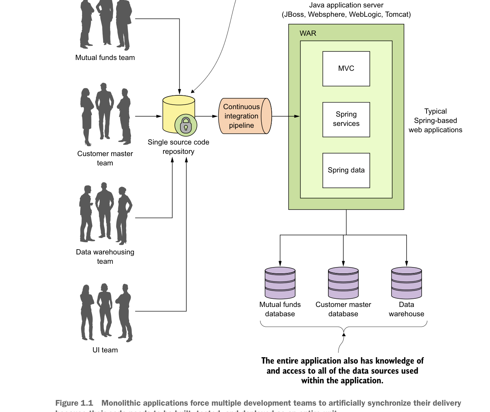

Microservice là gì? 3  Hình 1.1Ứng dụng nguyên khối buộc nhiều nhóm phát triển phải đồng bộ hóa việc phát hành một cách gượng ép vì mã nguồn của họ cần được xây dựng, kiểm thử và triển khai như một đơn vị hoàn chỉnh.